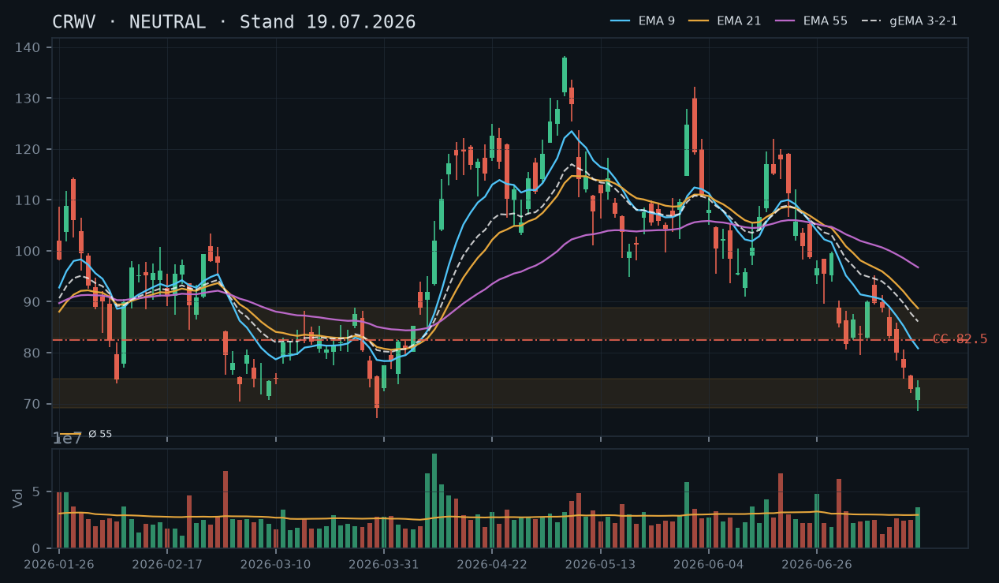
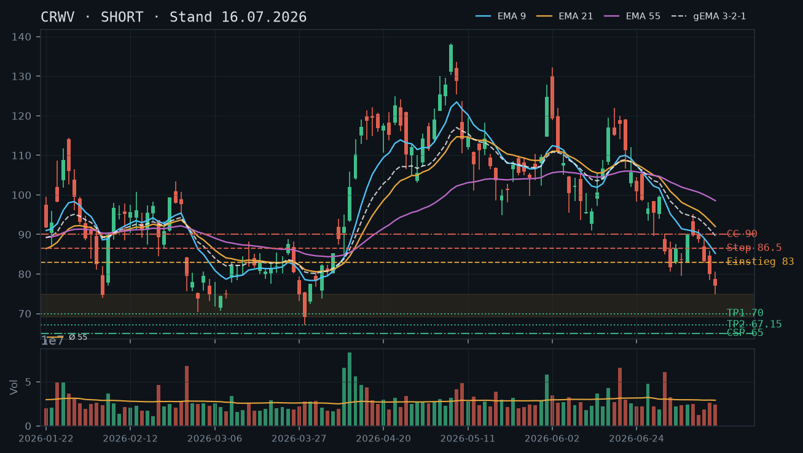
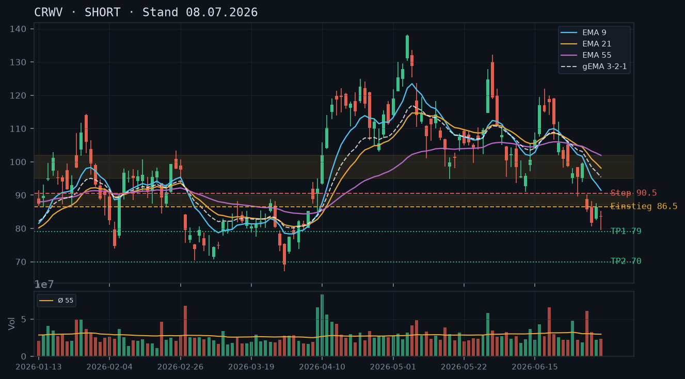

CRWV
Analyse-Historie · neueste zuerstCRWV erholt sich kräftig aus der März-Zone – der Rebound läuft, EMAs drehen noch nicht, aber der Kurs nähert sich dem Widerstandscluster 85–88: Covered Call auf den Aktienbestand ist das klare Gebot der Stunde.

1 · Trendstruktur
Der übergeordnete Abwärtstrend (Hochs: ~138 Mitte Mai → 119 Juni → 96 Juli) ist strukturell noch intakt – tiefere Hochs und tiefere Tiefs dominieren das Bild seit Mai. Allerdings zeigt die Kursentwicklung der letzten vier Sessions eine bemerkenswerte Erholung: Vom Tief 68,51 (17.07.) auf aktuell ~84,60 Intraday entspricht das einem Rebound von rund 23% in sechs Handelstagen. Die März-Supportzone 69,15–74,81 hat gehalten – damit bestätigt sich der Befund der Analyse vom 16.07. ein drittes Mal. Das ist nun eine vierfach bestätigte Unterstützungszone (27./30./31.03. + Juli-Tief 68,51). Kritische Widerstandslevels: 85,37 (Tageshoch 22.07.), 85,91–88,88 (Swing-Highs 13./14.07.) und EMA9 (~80,00). Der Kurs hat den EMA9 bereits überwunden und testet jetzt den Bereich 85–89.
2 · Candlestick-Formationen
Die letzten drei Tageskerzen zeichnen ein klares Erholungsbild: 21.07. bullische Marubozu-ähnliche Kerze (74,50–80,45, Schluss 79,58 nahe Hoch), 22.07. erneut starke Aufwärtskerze (Schluss 82,64, Range 79,58–85,37) mit Schluss nahe Tageshoch – beide Kerzen zeigen Kaufdruck ohne nennenswerte obere Dochte bis in den Widerstandsbereich. Heute (23.07., IBKR 84,60 +2,37%) setzt die Bewegung fort, nähert sich aber dem ersten ernsthaften Widerstandscluster 85–88. Warnsignal: Das rel_volumen der letzten drei Sessions (0,85 / 0,81 / heute noch offen) ist unauffällig bis unterdurchschnittlich – der Rebound läuft bisher ohne Volumenbestätigung, was für einen technischen Bounce spricht, aber noch keine Trendwende signalisiert.
3 · EMA-Lage (9 / 21 / 55)
EMA9 (80,00) wurde per Schlusskurs 22.07. (82,64) nach oben gebrochen – das ist der erste EMA9-Kreuzungspunkt seit dem Abwärtstrend-Beginn und kurzfristig bullisch zu werten. EMA21 (86,22) und EMA55 (94,86) liegen noch deutlich darüber und fallen weiter – der gema_321 (84,55) zeigt die komprimierte EMA-Lage: Kurs (~84,60) und gema_321 laufen nahezu deckungsgleich, was eine Entscheidungszone signalisiert. Die Reihenfolge EMA9 < EMA21 < EMA55 (alle fallend) bleibt strukturell bearish. Ein nachhaltiger Bruch über EMA21 (~86,22) wäre das nächste Signal für eine ernsthafte Trendwende-Diskussion.
4 · Trade-Setup
| Richtung | Kein Trade |
| Einstieg | Kein direktionaler Aktien-Trade – Widerstandszone 85–88 wird gerade angelaufen, kein Einstieg mit gutem CRV |
| Stop | – |
| Ziel | – |
| CRV | – |
5 · Stillhalter (max. 12 Tage)
Mit 1.400 Aktien im Bestand (kein Optionsbestand laut IBKR-Snapshot) und einem Kurs der direkt in den Widerstandscluster 85–88 läuft, ist der Covered Call das eindeutig dominante und trendkonforme Instrument. Der Rebound aus der März-Zone ist real, aber ohne Volumenbestätigung und strukturell gegen den übergeordneten Abwärtstrend – Prämien kassieren durch CC oberhalb des Widerstands ist hier die sauberste Strategie. Ein CSP kommt nicht in Betracht: Die Supportzone 69–75 liegt 12–16% entfernt, und nach dem starken Rebound ist das Chancen-Risiko-Verhältnis für neue Put-Verkäufe zu schwach.
| Geschäft | Covered Call |
| Strike | 92.5 |
| Puffer | 9.3 % |
| Zone | über EMA21 (86,22), Swing-High-Cluster 85,91–88,88 (13./14.07.) und psychologischem Niveau 90,00 |
| Verfall bis | 2026-08-01 (9 Tage – nächster Standard-Freitag) |
| Begründung | Strike 92,50 liegt klar oberhalb des dichten Widerstandsclusters 85,91–88,88 (Swing-Highs 13./14.07.), des fallenden EMA21 (86,22) und der psychologischen Marke 90,00. Damit hat der Kurs drei technische Barrieren vor sich, bevor der Strike erreicht wird. Puffer von ~9,3% zum aktuellen Kurs (84,60 Intraday) ist angesichts der fallenden EMAs und der fehlenden Volumenbestätigung des Rebounds komfortabel. Alternativ-Strike 90,00 (aggressiver, ~6,4% Puffer) wäre wählbar, wenn höhere Prämie gewünscht – aber 90,00 liegt direkt über dem psychologischen Niveau und knapp über dem Rebound-Hochpunkt der letzten Rally Anfang Juli (95er-Bereich), weshalb 92,50 mehr Puffer lässt. Andienungs-Szenario: Ein Kurs von 92,50 zum Verfallstag 01.08. würde bedeuten, dass der Markt EMA21, die Swing-Highs und die 90er-Marke nachhaltig gebrochen hat – dann wäre eine Trendwende diskutierbar und eine Aktienabgabe zu 92,50 nach dem Rückgang von ~138 immer noch ein akzeptabler, wenn auch schmerzhafter Exit. Prüfen in der Optionskette: Prämie am 92,50er CC (Verfall 01.08.), Bid-Ask-Spread und Open Interest; als Alternative 90,00er für höhere Prämie bei weniger Puffer vergleichen. |
Bestand: Aktienbestand long (kein laufender Optionsbestand laut IBKR-Snapshot vom 23.07. 11:36). Die letzte CC-Empfehlung (82,50er, Verfall 25.07., aus Analyse vom 19.07.) war nicht eröffnet worden – der Kurs ist stattdessen über diesen Strike gestiegen, was die Wichtigkeit eines neuen CC-Einstiegs jetzt unterstreicht. Empfehlung: CC auf den bestehenden Aktienbestand zum 92,50er Strike (Verfall 01.08.) als trendkonforme Prämiennahme auf dem erhöhten Kursniveau. Roll-Trigger: Sollte der Kurs per Tagesschluss über 88,00 mit steigendem Volumen (rel_volumen > 1,5) schließen, wäre ein Roll des CC auf höhere Strikes (95,00 / 97,50) oder eine Schließung sinnvoll, um Aufwärtspotenzial nicht abzuschneiden. Umgekehrt: Fällt der Kurs zurück unter EMA9 (80,00) mit einem Schlusskurs unter 79,00, verliert der Rebound seinen technischen Boden – dann CC laufen lassen oder nachträgliche Strike-Senkung per Roll prüfen.
Ausführliche Analyse vom 23.07.2026 anzeigen
CRWV – Detailanalyse 23.07.2026
Abgleich mit den historischen Analysen
Die Short-These vom 08.07.2026 hat präzise funktioniert: Einstieg 86,50 wurde sofort erreicht, Ziel 1 (79,00) am 14.07. durchschritten (Tief 78,40), Ziel 2 (70,00) am 17.07. mit Tief 68,51 nahezu exakt getroffen. Die Analyse vom 16.07. warnte bereits korrekt vor der Nähe zur März-Supportzone 69,15–74,81 und empfahl, dort keine frischen Shorts zu eröffnen. Die Analyse vom 19.07. erkannte den Zone-Test und schwenkte konsequent auf CC um – der empfohlene 82,50er CC (Verfall 25.07.) wurde laut IBKR-Snapshot nicht eröffnet, was im Nachhinein nachteilig war: Der Kurs ist von 72,91 auf jetzt 84,60 gestiegen (+16%), sodass Prämieneinnahmen auf dem niedrigeren Niveau verpasst wurden. Das ändert nichts an der Logik, unterstreicht aber die Dringlichkeit, jetzt auf dem erhöhten Niveau einen CC zu eröffnen.
1. Trendstruktur – Details
Der strukturelle Abwärtstrend seit dem Allzeithoch (~138, 06.05.) bleibt durch tiefere Hochs und tiefere Tiefs definiert. Konkrete Sequenz der relevanten Schwunghochs: 138,25 (06.05.) → 121,37 (15.04.) → 119,45 (16.06.) → 95,14 (09.07.) → 88,88 (13.07.) → 85,37 (22.07., vorläufiges Hoch). Tiefs: 94,82 (04.05.) → 68,51 (17.07., bisher letztes Tief). Die März-Supportzone 69,15–74,81 ist jetzt vierfach bestätigt (Tiefs: 27.03. bei 73,22, 30.03. bei 67,15, 31.03. bei 72,42, jetzt 17.07. bei 68,51). Diese Mehrfachbestätigung verleiht der Zone erhebliches strukturelles Gewicht – sie ist keine bloße Unterstützungshypothese mehr, sondern eine Demand Zone mit klarer Marktstruktur-Relevanz.
Kritische Widerstandslevels im Detail: 85,37 (Tageshoch 22.07., unmittelbarer Widerstand), 85,91–88,88 (Swing-High-Cluster der Erholungsversuche vom 13./14.07.), EMA21 bei ~86,22 (fallend, großer Widerstand), 90,00 (psychologisch), EMA55 bei ~94,86 (fallend, struktureller Deckel). Unterstützungen: 80,00 (ehemaliger Widerstand, jetzt Support und EMA9-Niveau), 74,81–69,15 (März-Zone, stark).
2. Candlestick-Formationen – Details
Die Erholungssequenz seit 17.07. (Tief 68,51) zeigt folgende Kerzenstruktur: 17.07. – Hammer mit langem unterem Docht (Open 70,71, Low 68,51, Close 73,21), klassisches Reversal-Signal direkt auf der historischen Supportzone. 20.07. – Inside-Bar-ähnlich (Low 73,01, Close 73,06), Konsolidierung ohne Zonenbruch. 21.07. – Starke Aufwärtskerze, Schlusskurs 79,58 nahe Tageshoch 80,45, erster signifikanter Momentum-Impuls. 22.07. – Continuation-Candle (79,58–85,37, Schluss 82,64), zweiter Tag mit Schlusskurs nahe Tageshoch. Heute 23.07. – Intraday +2,37% auf 84,60, noch keine finale Kerzensignatur.
Volumen-Analyse: Das Tief am 17.07. wurde mit rel_volumen 1,23 markiert (über Schnitt) – ein klassisches Exhaustion-Volume-Muster. Der anschließende Rebound läuft mit rel_volumen 0,78 / 0,85 / 0,81 (20.–22.07.) – deutlich unter Schnitt. Das ist ein wichtiges Signal: Der Bounce kommt ohne institutionelles Kaufinteresse. Es spricht für einen technischen Rebound/Short-Covering, nicht für eine fundamentale Trendwende. Dies rechtfertigt die vorsichtige NEUTRAL-Einschätzung und den CC-Fokus.
3. EMA-Analyse – Details
EMA-Werte per 22.07. (Schlusskurs): EMA9: 80,00 | EMA21: 86,22 | EMA55: 94,86 | gema_321: 84,55. Reihenfolge EMA9 < EMA21 < EMA55, alle fallend – strukturell bearish. Der Kurs (82,64 Schluss / 84,60 Intraday heute) liegt zwischen EMA9 und EMA21: Das ist eine klassische Bounce-in-Resistance-Situation. Der gema_321 (84,55) liegt nahezu identisch mit dem aktuellen Kurs – der gewichtete EMA-Verbund signalisiert, dass der Kurs exakt am technischen Gleichgewicht angekommen ist. Oberhalb des gema_321 (> 84,55) könnte kurzfristiger Aufwärtsdruck entstehen; EMA21 (86,22) ist die entscheidende Hürde für eine Trendwende-Diskussion.
EMA9 wurde per Schluss 22.07. (82,64) erstmals seit dem Abwärtstrend-Beginn nach oben gebrochen. Das ist kurzfristig positiv, aber angesichts des volumenarmen Rebounds mit Vorsicht zu behandeln. Eine Kreuzung EMA9 > EMA21 (Bullish Cross) wäre das nächste technische Signal – dafür müsste der Kurs mehrere Tage über ~86,22 schließen und EMA9 weiter anheben.
4. Trade-Setups A / B / C (direktionale Aktien-Trades)
Setup A – Kein Trade (bevorzugt): Der Kurs befindet sich mitten in der Widerstandszone 85–89. Weder ein Long- noch ein Short-Einstieg bietet hier ein akzeptables CRV. Long gegen den übergeordneten Trend mit Stop unter 80 und erstem Ziel 89 wäre CRV ~1,1:1 – ungenügend. Short an aktueller Position wäre zu früh ohne Bestätigung (kein Bearish-Reversal-Signal vorhanden).
Setup B – Long-Breakout (Eventualfall): Einstieg per Stop-Buy über 88,88 (Bruch des Swing-High-Clusters 13./14.07.), Stop bei 84,00 (unter aktuellem Niveau und EMA9-Puffer), Ziel 1: 95,00 (EMA55-Bereich), Ziel 2: 100,00. CRV zu Ziel 1: (95,00–88,88) / (88,88–84,00) = 6,12 / 4,88 = 1,25:1 – akzeptabel, aber gegen Trend. Voraussetzung: Volumen > 1,5x Schnitt beim Ausbruch.
Setup C – Short-Rebound-Verkauf (Eventualfall): Einstieg Short bei Tagesschluss im Bereich 87–89 mit bearisher Reversalkerze (Shooting Star, Bearish Engulfing), Stop über 90,50, Ziel 1: 79,00, Ziel 2: 74,00. CRV zu Ziel 1 bei Einstieg 88: (88–79) / (90,50–88) = 9 / 2,5 = 3,6:1. Das wäre das bessere Setup, wenn die Zone 85–89 als Deckel hält – abwarten auf Bestätigung.
5. Stillhalter-Strategie – Detailanalyse
Ausgangslage: Aktienbestand long laut IBKR-Snapshot (23.07. 11:36, kein Optionsbestand). Kein rollender Optionsbestand vorhanden. Die aus der Analyse vom 19.07. empfohlene CC-Position (82,50er, Verfall 25.07.) wurde nicht eröffnet – was dokumentiert, dass bei einem Kursanstieg von 72,91 auf jetzt 84,60 Prämieneinnahmen verloren gingen. Dieser Rückblick ist wichtig für die Roll-Logik: Der nächste CC sollte konsequent eröffnet werden.
Covered Call – Strike-Herleitung:
- Zone 1 (unmittelbarer Widerstand): 85,37 (Tageshoch 22.07.) – zu nah, kein Strike direkt auf Widerstand sinnvoll
- Zone 2 (Swing-High-Cluster): 85,91–88,88 (Highs 13./14.07.) – der Strike soll diese Zone als Puffer VOR sich haben, also darüber liegen
- Zone 3 (psychologisch + EMA21): 90,00 und EMA21 86,22 – weiterer Widerstand oberhalb der Swing-Highs
- Gewählter Strike 92,50: Liegt über allen drei Zonen. Puffer zum aktuellen Kurs (84,60): ~9,3%. In 9 Tagen müsste CRWV über 85,37 + 88,88 + 90,00 steigen – drei Widerstände ohne Volumenunterstützung. Das Szenario ist technisch unwahrscheinlich, aber nicht ausgeschlossen.
- Alternativ-Strike 90,00 (aggressiver): Puffer ~6,4%, liegt direkt über dem psychologischen Level. Höhere Prämie, weniger Sicherheitsmarge. Empfehlung: Prämienvergleich 90er vs. 92,50er in der Optionskette – wenn 90er Prämie mindestens 1,5x der 92,50er beträgt, ist der Trade-off diskutierbar.
Andienungsszenario 92,50er CC: Wird der Strike angedient (Kurs ≥ 92,50 am 01.08.), hätte CRWV innerhalb von 9 Tagen die gesamte Widerstandsstruktur durchbrochen. Das würde eine ernstzunehmende Trendwende signalisieren. In diesem Szenario ist eine Aktienabgabe zu 92,50 nach dem Absturz von 138 auf 68,51 zwar schmerzhaft, aber ordentlich: Die Verluste wurden teilweise durch Prämieneinnahmen gemindert. Andienungsrisiko ist daher akzeptabel.
Roll-Trigger (konkret):
- Aufwärts-Roll: Tagesschluss über 88,00 mit rel_volumen > 1,5 → CC auf 95,00er oder 97,50er Verfall 01.08. rollen, um Aufwärtspotenzial zu erhalten
- Abwärts-Bestätigung: Tagesschluss unter EMA9 (aktuell 80,00) mit bearisher Kerze → CC laufen lassen, Prämie maximal ausschöpfen; alternativ auf 85,00er Strike nächster Woche rollen für mehr Prämie
- Schließung: Prämie auf ≤ 20% des ursprünglichen Wertes gesunken → Gewinnmitnahme und ggf. sofortige Neueröffnung auf aktuellem Niveau
CSP – warum nicht: Der CSP ist in dieser Situation aus zwei Gründen nicht sinnvoll. Erstens: Der Kurs hat gerade die März-Zone nach oben verlassen – ein CSP würde bedeuten, Puts zu verkaufen während der Kurs steigt und die technische Situation sich verbessert, was das Risiko einer Andienung weit unter aktuellem Kurs mit schlechtem Timing vereint. Zweitens: Die nächste valide Supportzone (69–75) liegt 12–16% entfernt – der Puffer ist zu groß für nennenswerte Prämien bei 9-tägiger Laufzeit. Qualität vor Vollständigkeit: CSP auf null gesetzt.
CRWV hat die März-Supportzone (69,15–74,81) erreicht und testet sie aktuell – kein frischer Short mehr sinnvoll, die Zone hält bisher, aber ein Covered-Call-Setup dominiert klar angesichts des Aktienbestands.

1 · Trendstruktur
Der übergeordnete Abwärtstrend seit dem Hoch bei ~138 (06.05.) ist intakt: fallende Hochs (138 → 121 → 100 → 90 → 88) und fallende Tiefs. Allerdings ist CRWV nun exakt in der kritischen März-Support-Zone 69,15–74,81 angekommen – dreifach bestätigt (27., 30., 31.03.). Der Kurs schloss am 17.07. bei 73,21 und handelt aktuell bei 72,91, also mitten in der Zone. Ein Bounce von hier wäre technisch legitim; ein nachhaltiger Bruch unter 68,50 würde die gesamte historische Basis zerstören und neues Abwärtspotenzial in Richtung 60–62 eröffnen.
2 · Candlestick-Formationen
Die letzte vollständige Kerze (17.07.): Open 70,71, High 74,50, Low 68,51, Close 73,21 – eine bullische Umkehrkerze mit langem Unterwick und Erholung über 73. Rel. Volumen: 1,23 (überdurchschnittlich) – das deutet auf Kaufinteresse im Bereich des Tiefs hin. Zuvor (16.07.) ein Schlusskurs von 72,91 bei rel. Volumen 0,86 – schwacher Verkäufer-Tag. Die Kombination aus Hammer-ähnlicher Kerze am 17.07. mit erhöhtem Volumen direkt auf historischem Support ist ein erster, aber noch nicht bestätigter Reversal-Hinweis.
3 · EMA-Lage (9 / 21 / 55)
EMA9 (80,83) > EMA21 (88,70) – Nein, die Reihenfolge ist klar bearish: EMA9 (80,83) liegt unter EMA21 (88,70), dieser unter EMA55 (96,74). Der gema_321 steht bei 86,10. Alle drei EMAs fallen steil, der Kurs (72,91) handelt weit unter allen Durchschnitten – Abstand zum EMA9 beträgt ca. 10,9%, was eine ausgeprägte Überverkauft-Situation signalisiert. Kein EMA-Kreuz in Sicht, aber die Extremdistanz erhöht die Bounce-Wahrscheinlichkeit kurzfristig.
4 · Trade-Setup
| Richtung | Kein Trade |
| Einstieg | Kein direktionaler Trade – Zone-Test läuft, kein klarer Einstieg |
| Stop | – |
| Ziel | – |
| CRV | – |
5 · Stillhalter (max. 12 Tage)
Mit 1.400 Aktien im Bestand (kein Optionsbestand laut Snapshot) ist der Covered Call das klar dominante Instrument. Der übergeordnete Abwärtstrend ist intakt, ein Rebound von der März-Zone ist möglich aber unbestätigt – Prämien kassieren durch CC oberhalb des fallenden EMA9 ist das trendkonformste Setup. Ein CSP kommt erst dann in Betracht, wenn die Zone 69,15–74,81 per Tagesschluss bestätigt hält und ein klares Reversal-Signal folgt.
| Geschäft | Covered Call |
| Strike | 82.5 |
| Puffer | 13.2 % |
| Zone | über EMA9 (80,83) und der Widerstandscluster 82,72–85,91 (Highs 13./14./15.07.) |
| Verfall bis | 2026-07-25 (6 Tage – nächster Freitag, Standard-Expiry) |
| Begründung | Strike 82,50 liegt über dem fallenden EMA9 (80,83) und dem dichten Widerstandscluster 82,72–85,91, gebildet durch die Highs vom 13., 14. und 15.07. Ein Rebound in dieser Zone würde auf starken Verkaufsdruck treffen – fallende EMAs bilden dort einen Deckel. Puffer von 13,2% zum aktuellen Kurs (72,91) ist in 6 Tagen bei intaktem Abwärtstrend komfortabel. Andienungs-Szenario: Ein Kurs von 82,50 zum Verfallstag würde bedeuten, dass der Markt innerhalb weniger Tage über EMA9 und die jüngsten Swing-Highs gebrochen ist – in diesem Fall wäre die Trendwende real und eine Aktienabgabe zu 82,50 nach dem deutlichen Rückgang von ~138 kein schlechter Exit. Prüfe in der Optionskette: Prämie am 82,50er CC (oder alternativ 80er als aggressivere Wahl), Bid-Ask-Spread und Open Interest; bei CRWV ist die Liquidität erfahrungsgemäß ausreichend. |
Bestand: Aktienbestand long, keine laufenden Optionspositionen laut Snapshot. Empfehlung: CC auf den bestehenden Aktienbestand zum 82,50er Strike (Verfall 25.07.) als trendkonforme Prämiennahme. Bei einem Schlusskurs über 82,50 vor Verfall: Entweder Andienung akzeptieren oder rechtzeitig zurückkaufen. Roll-Trigger: Kurs nähert sich 80,00 mit steigendem Volumen und bullischen Tageskerzen – dann CC ggf. auf aggressivere Strikes rollen oder schließen, um Aktienbestand für mögliche Erholung offenzuhalten.
Ausführliche Analyse vom 19.07.2026 anzeigen
CRWV – Detailanalyse 19.07.2026
Abgleich mit früheren Analysen
Die Short-These vom 08.07.2026 hat exzellent funktioniert: Einstieg 86,50 wurde am 09.07. getriggert, Ziel 1 (79,00) wurde am 14.07. mit Tief 78,40 nahezu exakt erreicht. Die Analyse vom 16.07. identifizierte korrekt die März-Zone 69,15–74,81 als nächstes kritisches Level. Der Kurs hat diese Zone am 17.07. mit einem Intraday-Tief von 68,51 sogar marginal unterschritten – Schluss jedoch zurück bei 73,21, was einem ersten Reversal-Hinweis entspricht. Ziel 2 (70,00) wurde intraday am 17.07. erreicht (Tief 68,51). Das Short-Setup der Vorlage ist damit abgearbeitet. Frische Shorts sind hier nicht mehr sinnvoll.
1. Trendstruktur
Der primäre Abwärtstrend (seit ATH-Bereich Mai 2026 ~138) ist strukturell intakt: Sequenz fallender Hochs und Tiefs bestätigt. Jedoch befindet sich CRWV nun in einer historisch kritischen Zone:
- Support-Zone 69,15–74,81: Dreifach bestätigt durch die Tiefs vom 27.03. (73,22), 30.03. (67,15 – Intraday-Ausreißer, Schluss 69,15) und 31.03. (72,42). Dies ist keine blinde Linie, sondern eine Zone mit echter Markthistorie.
- Aktuelles Tief 17.07.: 68,51 – marginales Unterschreiten der Zone mit Erholung zurück auf 73,21. Das ist ein klassisches Stop-Run / Liquidity Sweep unterhalb der Zone, gefolgt von Rückkauf. Noch keine Bestätigung, aber relevant.
- Widerstand: EMA9 (80,83) und der Cluster 82,72–88,88 (Swing-Highs 13.–16.07.) sind die nächsten relevanten Bremsblöcke. Kein valider Support zwischen 73,21 und 68,51 – die Zone ist dünn.
- Übergeordnet: Bruch unter 67,00 (Monats-Schluss-Basis März) wäre das Signal für Beschleunigung Richtung 58–62 (nächste historische Referenzzone aus dem IPO-Bereich).
2. Candlestick-Formationen
17.07. (letzte vollständige Kerze): Bullischer Hammer / Reversal-Kerze – Open 70,71, Tief 68,51, Schluss 73,21, Hoch 74,50. Unterwick deutlich länger als Körper, Schluss im oberen Drittel der Range. Rel. Volumen 1,23 – überdurchschnittlich, was dem Signal Gewicht gibt. Diese Kerze allein ist kein Kaufsignal, aber ein klarer Hinweis auf Käufer bei diesem Level.
16.07.: Bärische Kerze (Open 75,57, Schluss 72,91), rel. Volumen 0,86 – moderater Verkaufstag ohne Panik-Volumen. 15.07.: Ähnliche Struktur, 14.07. und 13.07. zeigen die Topbildung des letzten Swing-Hochs (85,91 / 88,88).
Für eine Trendwenden-Bestätigung fehlt noch: ein Folgetag mit Schluss über 74,81 (Oberkante der Supportzone) auf erhöhtem Volumen.
3. EMA-Lage
Vollständig bearishe EMA-Konstellation: EMA9 (80,83) – EMA21 (88,70) – EMA55 (96,74), alle fallend, gema_321 bei 86,10. Kurs (72,91) handelt 10,9% unter EMA9 – eine der extremsten Diskrepanzen in den 90 Kerzen des Datensatzes. Solche Überdehnung begünstigt kurzfristige Rebounds, aber erzeugt keine Trendwende. Der EMA9 ist das erste Ziel jedes Bounce-Versuchs, liegt aber fast 11% entfernt – das ist in 6 Tagen bis zum nächsten Standard-Freitag (25.07.) eine unrealistische Erholungsdistanz bei normalem Marktumfeld. Der CC-Strike 82,50 liegt damit sicher über EMA9 und den Widerstandszonen.
4. Setup-Übersicht (alternativ)
Setup A – Bounce-Long (spekulativ, nicht empfohlen für direktionalen Trade):
Einstieg: 75,00 (Stop-Buy über Oberkante Zone bei Bestätigungskerze)
Stop: 67,50 (unter Sweep-Tief 68,51)
Ziel 1: 83,00 (EMA9-Bereich), Ziel 2: 88,88
CRV: 1,1:1 (Ziel 1) / 1,9:1 (Ziel 2) – zu schwach für eigenständigen Long-Trade ohne Trendwenden-Bestätigung. Nicht empfohlen.
Setup B – Kein direktionaler Trade: Die aktuelle Lage (Zone-Test ohne Bestätigung, kein EMA-Kreuz, kein Folgetag mit Bestätigung) gibt keinen sauberen Einstieg her. Stillhalter-Strategie via CC ist das überlegene Instrument für den bestehenden Aktienbestand.
Setup C – Short-Continuation (nur bei Bruch):
Einstieg: Stop-Sell unter 67,00 (Schlusskurs-Basis)
Stop: 74,00
Ziel: 62,00 / 58,00
CRV: 0,7:1 (erstes Ziel) – schwach und gegen die Zone-Logik. Erst bei mehrfachem Schluss unter 67,00 prüfenswert.
5. Stillhalter – Covered Call (Schwerpunkt)
Ausgangslage: Laut IBKR-Snapshot (12:08 Uhr, 19.07.2026) besteht ein Aktienbestand ohne laufende Optionspositionen. Damit ist das Feld vollständig frei für einen Covered Call.
Empfohlener Strike: 82,50 CC, Verfall 25.07.2026 (6 Tage DTE)
Zonen-Herleitung: Der Strike 82,50 liegt
- über EMA9 (80,83) – der fallende gleitende Durchschnitt fungiert als dynamischer Widerstand
- über dem dichten Widerstandscluster 82,72–85,91 (gebildet durch Swing-Highs vom 13.07.: 88,88; 14.07.: 85,91; 15.07.: 80,64 – Intraday-Bereich): Korrekt ausgedrückt: die relevanten Swing-Highs liegen bei 82,72 (13.07. Tief als Resistance), 85,91 (14.07. High) und 88,88 (13.07. High). Der Strike 82,50 liegt knapp darunter – alternativ 85,00 als konservativere Wahl mit mehr Puffer (16,6%), falls die Prämie am 82,50er zu gering ausfällt.
- Puffer zum aktuellen Kurs (72,91): 13,2% – komfortabel für 6 Tage im Abwärtstrend
Andienungs-Szenario: Werden die Aktien zu 82,50 angedient, entspricht das einem Verkaufspreis, der
- über dem aktuellen Kurs liegt
- oberhalb der gesamten Widerstandscluster-Zone platziert ist
- bedeuten würde, dass der Markt in 6 Tagen alle fallenden EMAs und jüngsten Highs überwunden hat – eine fundamentale Trendwende, bei der eine Abgabe zu 82,50 ein akzeptabler Exit wäre
Roll-Trigger:
- Kurs steigt über 78,00 mit erhöhtem Volumen (rel. Volumen > 1,5) und bullischer Tageskerze: CC-Position genauer beobachten, ggf. auf 85,00 oder 90,00 rollen
- Kurs fällt unter 68,00 per Tagesschluss: Zone bricht, Aktienbestand ggf. hedgen (Put-Kauf oder Reduktion), CC-Prämie wäre in dieser Situation bereits verdient
- Bei Prämie unter 0,50 USD: Setup nicht eingehen, Kosten/Nutzen-Verhältnis unattraktiv – manuell in der Kette prüfen
Warum kein CSP: Die März-Zone hält bisher, aber nur mit einem einzelnen Hammer-Test. Eine dreifache Bestätigung innerhalb des Abwärtstrends reicht für einen CSP nicht aus, wenn der Kurs sich gerade erst in die Zone hineinbewegt. Kein CSP ohne klares Reversal-Signal (Schluss über 74,81 auf erhöhtem Volumen) und ohne Distanz zur Zone. Das CSP-Setup der Voranalyse (65,00er Strike vom 16.07., Verfall 24.07.) ist damit hinfällig – der Verfallstermin ist abgelaufen und wurde zu Recht konservativ strukturiert.
Alternativer CC-Strike 85,00 (konservativer): Liegt im Kern des Widerstandsclusters (85,91 ist das 14.07.-High), bietet 16,6% Puffer. Sinnvoll wenn Prämie am 82,50er unbefriedigend. Nächstgrößerer Standard-Strike wäre 87,50 (20,0% Puffer) – sehr konservativ, eher für Nutzer mit geringer Drawdown-Toleranz.
Die Short-These vom 08.07. hat hervorragend funktioniert – Einstieg um 86,50 wurde bereits am Folgetag erreicht, Ziel 1 (79,00) am 14.07. überschritten (Tief 78,40), aktuell nähert sich der Kurs mit 77,12 der historisch bedeutsamen März-Unterstützungszone 69,15–74,81, in der auch Ziel 2 (70,00) liegt. Der Trend bleibt bearish, aber frische Shorts sollten die Nähe zu dieser Zone berücksichtigen.

1 · Trendstruktur
Vom Junihoch 132,15 (02.06.) läuft ein steiler, ungebrochener Abwärtstrend. Der Short-Trigger der Vorlage (86,50) wurde bereits am 08.07. selbst erreicht (Hoch 90,15). Seither fiel der Kurs kontinuierlich bis 74,81 (Tief 15.07. bei 74,81) – exakt in die historische Unterstützungszone 69,15–74,81 aus dem März (dreifach getestet: 27., 30., 31.03.), die vor der großen Rally auf 132 als Basis diente. Ziel 1 (79,00) wurde am 14.07. klar unterschritten.
2 · Candlestick-Formationen
13.07.: Schluss 83,31, Fortsetzung des Abwärtsdrucks. 14.07.: Tief 78,40, Schluss 79,94 – Ziel 1 unterschritten. 15.07.: Tief 74,81 (exakt am oberen Rand der historischen März-Zone), Schluss 77,12 – eine leichte Erholung vom Tagestief, aber ohne echtes Umkehrsignal (rel_volumen nur 0,83, unterdurchschnittlich).
3 · EMA-Lage (9 / 21 / 55)
Weiterhin vollständig bearische, weit gespreizte Fächerordnung: EMA9 (85,19) < gema_321 (89,68) < EMA21 (91,98) < EMA55 (98,53), alle fallen steil. Der Kurs (77,12) liegt rund 8 Punkte unter EMA9 – kein Anzeichen einer Trendabschwächung, der Trend bleibt technisch voll intakt.
4 · Trade-Setup
| Richtung | Short |
| Einstieg | Rebound-Verkauf bei 83,00 (Erholung Richtung EMA9 85,19) oder Bruch-Verkauf unter 74,81 (Bruch der historischen März-Zone) |
| Stop | 86,50 (Rebound-Szenario) bzw. 78,50 (Bruch-Szenario) |
| Ziel | 70,00 (Ziel 2 der Vorlage, unverändert) / 67,15 (Verlängerung, März-Tief vom 30.03.) |
| CRV | 3,7 : 1 (Rebound-Szenario) / 1,1 : 1 bzw. 1,8 : 1 (Bruch-Szenario, deutlich schwächer da bereits nah am Ziel) |
5 · Stillhalter (max. 12 Tage)
Ungewöhnlich für diese Analyseserie: Die Zone 69,15–74,81 ist eine ECHTE, dreifach bestätigte historische Unterstützung aus dem März – kein bloßer Einzeltest. Das macht einen CSP hier technisch besser begründbar als sonst in einem intakten Abwärtstrend üblich, auch wenn der übergeordnete Trend weiterhin für Vorsicht spricht. Ein CC bleibt die trendkonformere Wahl oberhalb der fallenden EMAs.
| Geschäft | Cash-Secured Put |
| Strike | 65.0 |
| Puffer | 15.7 % |
| Zone | unter der dreifach bestätigten historischen März-Zone 69,15–74,81 (27., 30., 31.03.) |
| Verfall bis | 2026-07-24 (8 Tage) |
| Begründung | Strike liegt klar unter der historisch mehrfach bestätigten Zone. Der große Puffer (15,7%) ist trotz der soliden Zonen-Bestätigung bewusst gewählt, da der übergeordnete Trend weiterhin klar bearish ist und ein Zonenbruch angesichts der Dynamik der letzten Wochen nicht unwahrscheinlich ist. Andienung bei 65,00 wäre ein Einstieg unter der gesamten historischen Basis – nur bei einem Bruch der März-Zone relevant. Prüfen: Prämie im Verhältnis zum 15,7%-Puffer, Liquidität am 65er. |
| Geschäft | Covered Call |
| Strike | 90.0 |
| Puffer | 16.7 % |
| Zone | über EMA9 (85,19) und den jüngsten Schwunghochs 85,91–88,88 (13./14.07.) |
| Verfall bis | 2026-07-24 (8 Tage) |
| Begründung | Strike liegt deutlich über dem fallenden EMA9 und den letzten Reboundhochs – ein Anstieg von 16,7% binnen 8 Tagen wäre gegen den intakten, steilen Abwärtstrend außergewöhnlich. Andienung bei 90,00 wäre nur bei einer fundamentalen Trendwende relevant und dann ein sehr komfortabler Exit. Prüfen: Prämie im Verhältnis zum 16,7%-Puffer, Liquidität am 90er. |
Ausführliche Analyse vom 16.07.2026 anzeigen
CRWV – Short-These voll bestätigt, historische Zone erreicht
1. Vollständige Bestätigung
Die 08.07.-Analyse wurde nahezu perfekt getroffen: Der Einstieg (86,50) wurde noch am selben Tag erreicht (Hoch 90,15), Ziel 1 (79,00) wurde am 14.07. klar unterschritten (Tief 78,40). Der Kurs steht jetzt direkt in der Zielregion von Ziel 2 (70,00).
2. Bedeutung der März-Zone
Die Zone 69,15–74,81 ist keine gewöhnliche, kürzlich entstandene Marke, sondern die Basis, von der aus die große Rally im April (auf bis zu 132) startete – dreifach bestätigt im März, bevor die Aktie überhaupt in die aktuelle Handelsspanne aufstieg. Das Tief vom 15.07. (74,81) trifft diese Zone exakt am oberen Rand. Das ist ein legitimer Punkt, an dem eine technische Gegenreaktion wahrscheinlicher wird als an einer beliebigen Marke.
3. Setup-Empfehlung
Für frische Shorts ist ein Rebound-Verkauf (83,00, Stop 86,50) mit CRV 3,7:1 deutlich attraktiver als ein Verkauf auf aktuellem Niveau oder ein Bruch-Szenario (74,50, Stop 78,50), dessen CRV mit 1,1–1,8:1 wegen der Nähe zum Ziel bereits eingeschränkt ist. Wer bereits seit dem 08.07. in der Position ist, sollte angesichts der historischen Zone einen Teilgewinn in Erwägung ziehen oder den Stop eng nachziehen.
4. Stillhalter-Vertiefung
CSP bei 65,00 (15,7% Puffer): Fußt auf einer der am besten historisch bestätigten Zonen dieser gesamten Analyseserie – dennoch bewusst mit großzügigem Puffer, da der übergeordnete Trend weiter bearish ist. CC bei 90,00 (16,7% Puffer): Trendkonform, mit sehr komfortablem Abstand zu den fallenden EMAs. Andienungsszenario CSP: Kauf bei 65,00 wäre ein Einstieg unter der kompletten historischen Basis – nur bei fortgesetztem Bruch relevant. Andienungsszenario CC: Abgabe bei 90,00 setzt eine fundamentale Trendwende voraus. Rollentrigger CSP: Tagesschluss unter 69,00. Rollentrigger CC: Tagesschluss über 86,00 mit Volumen.
5. Abgleich mit früherer Analyse
Die Short-These vom 08.07. wird vollständig bestätigt und hat bereits ihr erstes Ziel überschritten. Neu ist die Erkenntnis, dass der Kurs jetzt eine echte historische Unterstützungszone erreicht hat, was für frische Positionen zu mehr Vorsicht und einem Rebound-Ansatz statt direkter Verfolgung rät.
CRWV befindet sich in einem intakten Abwärtstrend mit fallenden EMAs, Kurs weit unter allen Durchschnitten – Short-Setup bietet sich an.

1 · Trendstruktur
CRWV hat nach einem Hoch bei ~138 USD (06. Mai 2026) eine ausgeprägte Abwärtsphase eingeleitet. Die Sequenz fallender Hochs und Tiefs ist klar: 138 → 127 → 119 → 106 → 98 → 87 → 83. Aktuelle Unterstützungsbereiche liegen bei ~79–80 USD (März-Tiefs) sowie ~67–70 USD (Tief 30. März). Widerstände finden sich bei ~87–88 USD und ~98–100 USD.
2 · Candlestick-Formationen
Die letzte Kerze (07. Juli) zeigt einen kleinen Körper von 83,74 (Open) zu 83,53 (Close) mit einer unteren Docht-Ausdehnung bis 79,46 – ein leicht bärisches Muster ohne Erholungsstärke. Die Vorkerze (02. Juli) schloss bei 81,75 nach einem Tief bei 80,56, und der 01. Juli war ein starker Verkaufstag (rel. Volumen 2,0x) mit einem Einbruch von ~99,54 auf 85,69. Keine bullischen Umkehrsignale erkennbar.
3 · EMA-Lage (9 / 21 / 55)
Alle drei EMAs (EMA9: 91,43 / EMA21: 98,11 / EMA55: 101,95) fallen und stehen weit über dem aktuellen Kurs (~83,53) – klassisch bärische Staffelung. Der gema_321 bei 95,41 zeigt ebenfalls nach unten. Der Kurs notiert ca. 12–18 USD unter dem EMA9, was eine deutliche Überverkauftheit signalisiert, aber im Abwärtstrend kein Kaufsignal darstellt.
4 · Trade-Setup
| Richtung | Short |
| Einstieg | 86.50 (Limit oder Stop-Sell bei Rücksetzer an Widerstand) |
| Stop | 90.50 (über EMA9-Annäherung und lokalem Widerstand) |
| Ziel | 79.00 / 70.00 |
| CRV | 2.5 : 1 (bis erstes Ziel 79) |
Ausführliche Analyse vom 08.07.2026 anzeigen
CRWV – Detailanalyse (Stand: 08. Juli 2026)
1. Trendstruktur
CRWV vollzog nach dem IPO-artigen Anstieg ab Anfang April 2026 eine scharfe Rally von ~73 USD auf ein Allzeithoch von 138,25 USD am 06. Mai 2026. Seitdem befindet sich die Aktie in einem strukturellen Abwärtstrend mit einer lückenlosen Sequenz fallender Hochs und Tiefs:
- Hoch 138,25 (06.05.) → Hoch 129,52 (05.05.) → Hoch 127,85 (04.06.) → Hoch 121,99 (17.06.) → Hoch 119,19 (22.06.) → Hoch 106,54 (25.06.) → Hoch 99,79 (30.06.) → Hoch 90,26 (01.07.) → Hoch 88,17 (02.07.) → Hoch 87,54 (06.07.) → Hoch 85,31 (07.07.)
- Tiefs: 94,82 (19.05.) → 79,46 (07.07.) – neues Mehrmonatstief
Wichtige Supports: 79–80 USD (März-Konsolidierungsbereich, auch Tief 07.07.), 67–70 USD (Tief 30.03. bei 67,15), 73–74 USD (März-Boden). Widerstände: 87–88 USD (vorheriges Unterstützungsniveau, jetzt Widerstand), 95–98 USD (Bereich ehemaliger Konsolidierung Juni), 100–105 USD (starke Zone mehrfach getestet).
Der Trend ist eindeutig bearish. Das Tief vom 07. Juli bei 79,46 ist das tiefste Niveau seit dem 01. April 2026.
2. Candlestick-Formationen
Die letzten relevanten Kerzen zeigen durchgehend Schwäche:
- 01. Juli (rel. Volumen 2,0x): Bearisher Breakout-Tag – Open 88,87, Close 85,69, Tief 85,01. Deutliches Verkaufssignal mit doppeltem Durchschnittsvolumen. Bestätigt den Trendbruch unter 90 USD.
- 02. Juli: Fortsetzungskerze, Close 81,75, Tief 80,56. Kurs nähert sich der 80er-Marke.
- 06. Juli: Leichte Erholung, Close 86,46, aber nur schwaches Volumen (0,74x). Keine echte Käuferstärke.
- 07. Juli (letzte Kerze): Bearishes Spinning Top / Doji-ähnlich – Open 83,74, High 85,31, Low 79,46, Close 83,53. Untere Dochte deuten auf Kaufversuche hin, die aber scheiterten. Der Schlusskurs nahe dem Tagesopen signalisiert Unentschlossenheit mit bärischer Tendenz.
Kein bullisches Umkehrmuster erkennbar. Die Erholung am 06.–07. Juli wirkt wie eine bearishe Flagge/Bear-Flag im Stundenbereich.
3. EMA-Analyse
Die EMA-Konstellation ist klar bärisch:
- EMA9: 91,43 – fallend, ~8 USD über Kurs
- EMA21: 98,11 – fallend, ~15 USD über Kurs
- EMA55: 101,95 – beginnt zu fallen, ~18 USD über Kurs
- gema_321: 95,41 – ebenfalls fallend
Die Staffelung EMA9 < EMA21 < EMA55 (alle über dem Kurs) zeigt maximale bärische Ausrichtung. Der Kurs befindet sich bereits in einem weit überverkauften Abstand zu den EMAs (EMA9-Abstand: ~8 USD / ~9%). In starken Abwärtstrends kann dieser Abstand noch zunehmen, bevor eine Gegenbewegung einsetzt. Die EMAs konvergieren aktuell zwischen 91–102 USD und bilden eine starke Widerstandszone. Ein Rücksetzer in Richtung EMA9 bei ~87–92 USD wäre der ideale Short-Einstieg.
Das rel. Volumen war zuletzt überwiegend unter 1,0x – kein Volumen-getriebener Kaufimpuls sichtbar. Ausnahme: der Verkaufstag am 01. Juli (2,0x) bestätigte die bärische Dominanz.
4. Trade-Setups
Setup A (Bevorzugt) – Short beim Rücksetzer:
- Einstieg: 86,50 USD (Limit Short bei Rücksetzer an 87–88 USD Widerstandszone)
- Stop: 90,50 USD (über EMA9-Bereich und lokalem Widerstand 88–90)
- Ziel 1: 79,00 USD (aktuelles Tief / Support) → CRV: (86,50–79,00)/(90,50–86,50) = 7,50/4,00 = 1,9:1
- Ziel 2: 70,00 USD (Bereich März-Tief 67–70) → CRV: 16,50/4,00 = 4,1:1
Setup B – Aggressiver Short-Einstieg jetzt:
- Einstieg: 83,50 USD (Marktpreis, Schlusskurs 07.07.)
- Stop: 88,00 USD (über aktuellem Tageshoch + Puffer)
- Ziel 1: 79,00 USD → CRV: 4,50/4,50 = 1,0:1 (unattraktiv)
- Ziel 2: 70,00 USD → CRV: 13,50/4,50 = 3,0:1
- Nachteil: Stop ist relativ eng, Gegenbewegung kann Stop triggern
Setup C – Short bei EMA9-Berührung:
- Einstieg: 91,00 USD (bei Annäherung an EMA9)
- Stop: 95,00 USD (über EMA21-Bereich)
- Ziel 1: 79,00 USD → CRV: 12/4 = 3,0:1
- Ziel 2: 70,00 USD → CRV: 21/4 = 5,3:1
- Risiko: Kurs erreicht EMA9 möglicherweise nicht mehr (Trend zu stark)
Fazit: Setup A bietet die beste Kombination aus Konfluenz (Widerstandszone 87–88 USD) und attraktivem CRV. Gesamtbild bleibt bearish solange Kurs unter 90 USD notiert.